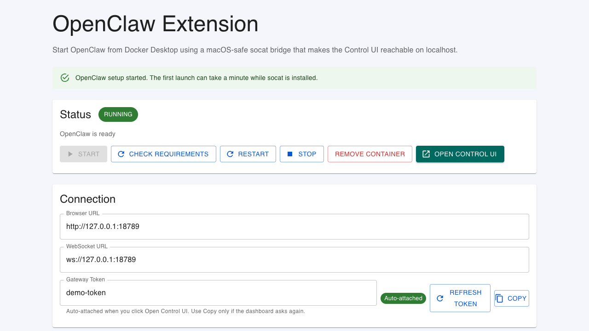

Localhost-only bridge
The runtime adds a small socat bridge so OpenClaw can be
reached from the host at 127.0.0.1 on Docker Desktop for macOS.
Docker Desktop extension for macOS
Shellharbor is the GUI on-ramp to OpenClaw, your personal open-source AI assistant. Click Start and it runs in a hardened, localhost-only container you manage from Docker Desktop — no terminal required.
What it solves
The runtime adds a small socat bridge so OpenClaw can be
reached from the host at 127.0.0.1 on Docker Desktop for macOS.
OpenClaw config, auth profiles, and user state live in a named Docker volume, so update and restart flows do not wipe the workspace.
The extension can detect host Ollama models and configure OpenClaw to use one, keeping local-model setup inside the existing Docker Desktop UI for offline use after the model is downloaded.
Current extension UI
The extension dashboard manages the service container, checks runtime image freshness, exposes diagnostics, and opens the canonical OpenClaw Control UI with gateway-token bootstrap.

Quick start
docker extension install ghcr.io/jcowhigjr/openclaw-docker-desktop-extension:stableRequires Docker Desktop with non-Marketplace extension installs enabled until the Marketplace listing is published.
make install-devUse this repo path when changing the extension UI, wrapper image, or release automation.
Current boundaries